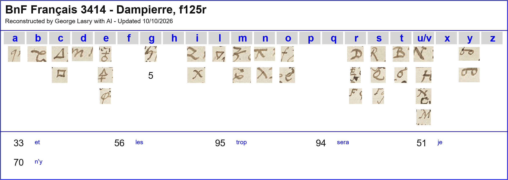
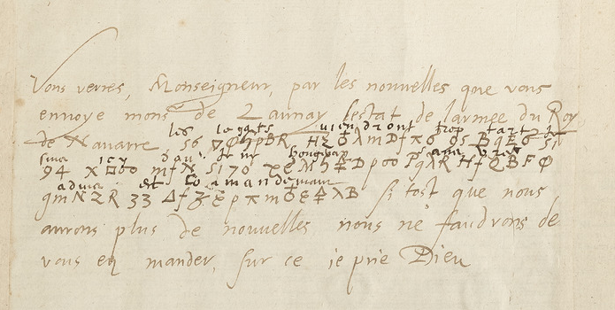
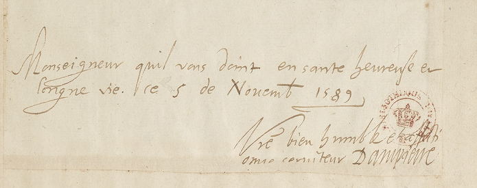

George Lasry’s decipherment
George Lasry’s report on this item, as he sent it on 24 October 2026 (PDF), in its own order and wording. The decipherment, the translation and the reconstruction of the key are his, made with ChatGPT Astra 6 and Anthropic Opus 5.5. This project’s own checks follow under Verification.
Français 3414 — Dampierre, ff125r–125v
Contents: Dampierre reports news of the King of Navarre’s army and says the legates will arrive too late; the cipher ends with advice and instructions.
2/2 pages transcribed; Deciphered
- Ciphertext-only:
- No
- Sender:
- Dampierre
- Recipient:
- Duke of Nevers
- Year:
- 5 November 1589
- Key:
- 39 symbols: 33 letter signs, 6 in nomenclature.
- Ciphertext:
- 67 elements, 67 identified (100.0%).
- Interlinear plaintext:
- Interlinear plaintext on the same page, f125r. ·

Excerpt and Translation
f125r, complete first paragraph: three cipher rows with surrounding cleartext f125r, complete closing, date and signature (cleartext)


Excerpt
Vous verrez, Monseigneur, par les nouvelles que vous envoye monsieur de Launay l'estat de l'armée du Roy de Navarre. Les legats viendront trop tart je sera icy d'ou je n'y bougeray sans vostre aduis et commandement. Si tost que nous aurons plus de nouvelles nous ne fauldrons de vous en mander, sur ce je prie Dieu. Monseigneur, qu'il vous donne en santé heureuse et longue vie. Ce 5 de Novembre 1589. Vostre bien humble et affectionné serviteur Dampierre
Translation
You will see, Monseigneur, from the news Monsieur de Launay sends you, the state of the King of Navarre’s army. The legates will arrive too late. I will be here, from where I will not move without your advice and instructions. As soon as we have further news, we shall not fail to send it to you. With that I pray to God. Monseigneur, may He grant you a happy and long life in good health. 5 November 1589. Your very humble and devoted servant, Dampierre.
Readable text
The full text, folio by folio, as in the report. Bold marks the passages deciphered from the cipher; the rest is the clear text of the letter. Question marks are the report’s: [?] or a bare ? for a sign or group left unread, a ? after a word for a doubtful reading.
Français 3414 — Dampierre, ff125r–125v
f125r
Full manuscript page
Vous verrez, Monseigneur, par les nouvelles que vous envoye monsieur de Launay l'estat de l'armée du Roy de Navarre. Les legats viendront trop tart je sera icy d'ou je n'y bougeray sans vostre aduis et commandement. Si tost que nous aurons plus de nouvelles nous ne fauldrons de vous en mander, sur ce je prie Dieu.
Monseigneur, qu'il vous donne en santé heureuse et longue vie. Ce 5 de Novembre 1589.
Vostre bien humble et affectionné serviteur
Dampierre
f125v
Full manuscript page
À Monseigneur Monseigneur le Duc de Nivernois pair de France
[?]
01 Verification
Spot-check against the manuscript
This result is George Lasry’s. This project did not re-solve the cipher: it checked one sample against the Gallica image and recorded what it found.
- Batch B. Image checked: https://openapi.bnf.fr/iiif/image/v3/ark:/12148/btv1b525187326/f261/pct:5,10,90,18/2000,/0/default.jpg
- Folio matches the report: yes; cipher present: yes
- What we checked: f125r (canvas 261, ark found via repo sweep list): 56 ∇φ5ϥBR / HZ..mDfπσ / 95 B9Eσ / 51 / 94 -> les legats viendront trop tart je sera, codes 56/95/51/94 per his table; interlinear agrees
- Verdict: confirmed (method key recovered based on adjacent plaintext, extent complete). The check is a sample, not a re-solution.
- Notes: No Gallica link in dossier; fr. 3414 = ark btv1b525187326. Dated 5 Nov 1589 in clear, signed. Only 67 cipher elements.

Notes and corrections
Fr. 3414 is Gallica ark btv1b525187326; the letter is image 261.
02 Other contributions
The plaintext of the period beside the cipher, as George Lasry reports it:
- Interlinear plaintext
- Interlinear plaintext on the same page, f125r.
Full texts
The transcription and the decryption of every document on this page, so that the reading can be used and checked. Short files are shown here; all are in the repository.
George Lasry's report entry (excerpts and translation)
Dampierre reports news of the King of Navarre’s army and says the legates will arrive too late; the cipher ends with advice and instructions. (Dampierre to Duke of Nevers, 5 November 1589, as given in George Lasry's report.)
Decryption: in full above, in George Lasry’s decipherment (readable.md)
Reading: in full above, in George Lasry’s decipherment (readable.md)
Translation: in full above, in George Lasry’s decipherment (translation_excerpt.md)
03 Sources
- George Lasry, with ChatGPT Astra 6 and Anthropic Opus 5.5, BnF cipher research, 10 October 2026 (sent to Daniel Bourdeau on 13 October 2026 for publication here), p. 82; his other items are listed on his contributor card.
- Fr. 3414 f125r, image 261 (no link in the report)
- image checked in the spot-check
- The working folder:
targets/dampierre1589/(his entry as extracted from the report, our spot-check,profile.json).